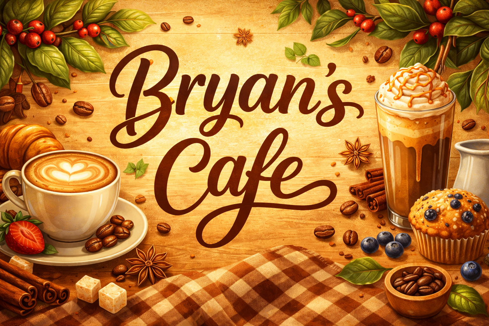
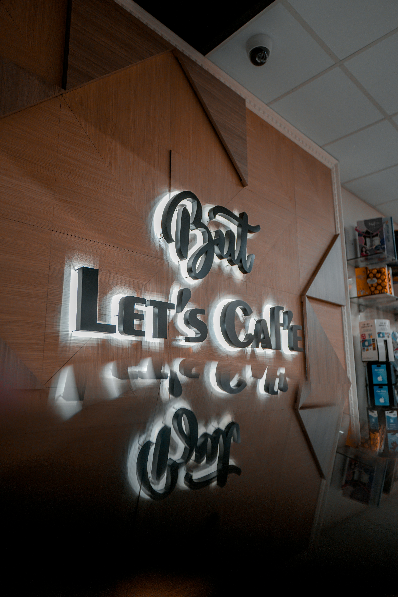

ABOUT US
Bryan's Café is a welcoming and modern café dedicated to providing high-quality food and beverages in a relaxed and friendly environment. Our goal is to create a space where customers can enjoy freshly prepared meals, premium coffee, and excellent customer service.
We focus on using fresh ingredients and maintaining consistent quality in everything we serve. Whether customers are visiting for a quick coffee, a casual meal, or a place to relax, Bryan's Café aims to deliver a comfortable and enjoyable experience.
Our café is designed to be accessible and convenient for all customers, offering a clean layout, easy navigation, and a welcoming atmosphere both in-store and online through our website.
OUR HISTORY
Bryan's Café began as a small local business with a simple vision: to serve great coffee and fresh meals to the community. Over time, the café has grown and developed into a trusted destination for customers looking for quality and consistency.
Through continuous improvement and customer feedback, the café has expanded its menu and enhanced its services while maintaining its original values. The focus has always remained on creating a friendly environment where customers feel comfortable and valued.
Today, Bryan's Café continues to evolve by adapting to modern trends while preserving its commitment to quality, service, and community connection.
